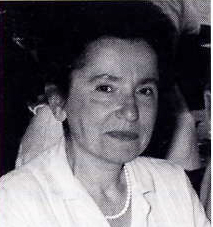
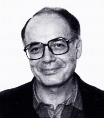

|
About us |
|
 Lilia Curzi-Dascalova is a neurologist and research associate at the French National Institute of Health and Medical Research (INSERM) in Paris. Her research is focused on the development of sleep in young children. She has published over one hundred papers in international journals (Journal of Sleep Research, Pediatric Research, Journal of Pediatrics, Revue d’Electroencéphalographie et de Neurophysiologie Cliniques) and has authored a number of specialized works. Over the last few years she has devoted a significant part of her research work to the representation of sleep in the visual arts, using an image database she has built that now runs to more than 6,200 entries. Her conference participations in Europe, the USA, Latin America and Japan alternate between presentations of her medical research on children’s sleep and talks on her research devoted to the representation of sleep in the visual arts. |
|
 Lucien Curzi worked most of his professional life in the press. An art critic based in Paris, he has published monographs on André Masson, Picasso, Wifredo Lam, Luc Peire and Olivier Debré, as well as numerous essays and articles of art criticism. He has also published poetry illustrated by contemporary artists. From the beginning, he has had a particular interest in engraving and printmaking, as well as in ceramics (especially stoneware and porcelain), a domain in which he has published several studies. Moreover, he has conceived and organized many exhibitions of painting and sculpture and has written the preface to over one hundred contemporary art events. |
|
Contact: lilia.curzi@wanadoo.fr |
|
Database joint: Catalogue in Excel 2010 of 6,212 artworks representing sleep. In French or English, with keywords in English and French. The data categories include artist (country, period); work of art (title, date, theme, technique); location (place, city, country), and figure represented (adult, infant, child, animal; no figure/abstract work). |